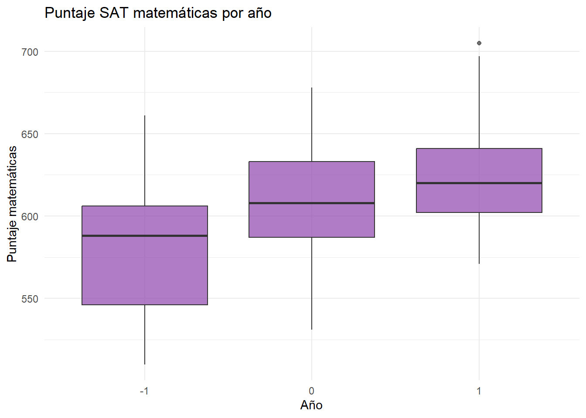
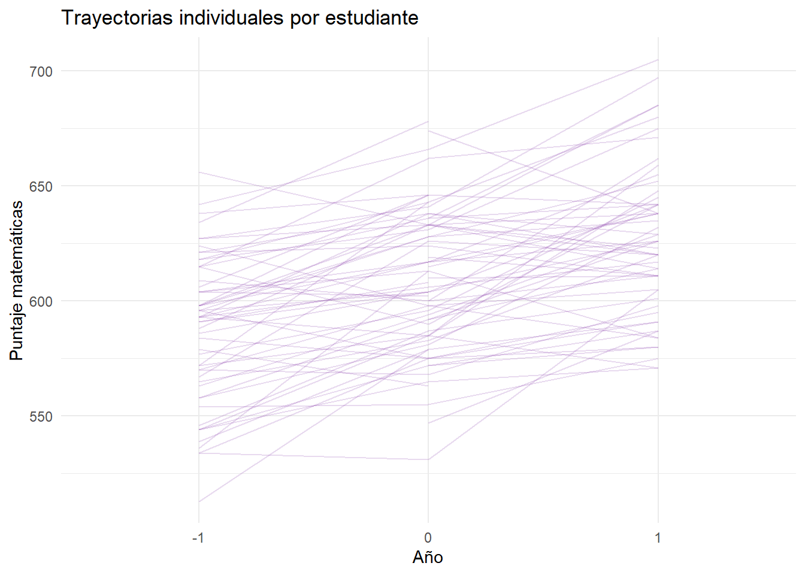
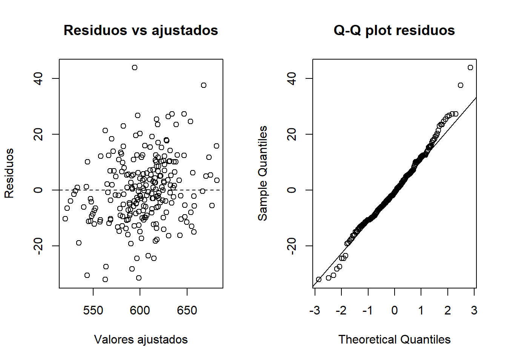
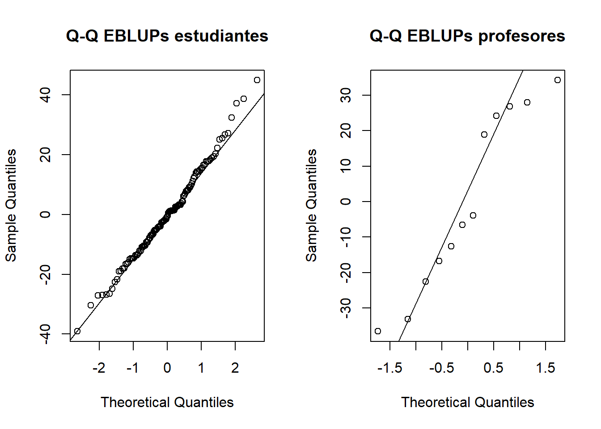

flowchart LR
A[Estudiante 1] --> P1[Profesor A]
A --> P2[Profesor B]
B[Estudiante 2] --> P1
B --> P3[Profesor C]
C[Estudiante 3] --> P2
C --> P3
Modelos con factores aleatorios cruzados (Crossed Random Effects)
The SAT Score Example 📊 - West et al., Cap. 8 (p. 369)
1 📊Problema de investigación
Se estudia el puntaje en matemáticas (math) de estudiantes que fueron evaluados por distintos profesores a lo largo del tiempo.
Pregunta central: ¿Difieren los puntajes en matemáticas entre estudiantes y entre profesores, y cambian con el año, considerando que estudiantes y profesores son factores cruzados — no anidados?
2 📊Diseño con factores aleatorios cruzados
- Cada estudiante puede haber tenido distintos profesores en distintos años
- Cada profesor puede haber enseñado a distintos estudiantes
- Esto es un diseño cruzado — no una jerarquía anidada
3 📊¿Por qué no es anidado?
| Diseño | Especificación | Significado |
|---|---|---|
| Anidado | (1 | tchrid/studid) |
Estudiantes dentro de profesores |
| Cruzado | (1 | studid) + (1 | tchrid) |
Estudiantes y profesores como factores cruzados |
En este ejemplo los estudiantes no están fijos a un profesor — pueden cambiar de profesor cada año. Por eso el modelo correcto usa factores cruzados.
4 📊Variables
| Variable | Tipo | Rol |
|---|---|---|
math |
Continua | Outcome — puntaje SAT matemáticas |
year |
Continua | Efecto fijo — año (-1, 0, 1) |
studid |
Identificador | Efecto aleatorio — estudiante |
tchrid |
Identificador | Efecto aleatorio — profesor |
Mostrar código
nrow(sat_data)[1] 234Mostrar código
n_distinct(sat_data$studid)[1] 122Mostrar código
n_distinct(sat_data$tchrid)[1] 12Mostrar código
table(sat_data$year)
-1 0 1
85 83 66 5 📊Exploración descriptiva


6 📊Estrategia de análisis
flowchart TD
A[Model 8.1\nFactores cruzados\nestud + profesor] --> B{H8.1\n¿Varianza entre estudiantes?}
B -->|Sí p<0.001| C{H8.2\n¿Varianza entre profesores?}
C -->|Sí p<0.001| D{H8.3\n¿Efecto fijo de year?}
D -->|Sí| E[Model 8.1 — Modelo Final]
7 📊Model 8.1 — Modelo con factores cruzados
Mostrar código
model8.1.fit <- lmer(
math ~ year + (1 | studid) + (1 | tchrid),
data = sat_data,
REML = TRUE
)
summary(model8.1.fit)Linear mixed model fit by REML. t-tests use Satterthwaite's method [
lmerModLmerTest]
Formula: math ~ year + (1 | studid) + (1 | tchrid)
Data: sat_data
REML criterion at convergence: 2123.6
Scaled residuals:
Min 1Q Median 3Q Max
-2.07907 -0.51907 -0.05871 0.44093 2.83753
Random effects:
Groups Name Variance Std.Dev.
studid (Intercept) 338.4 18.40
tchrid (Intercept) 762.9 27.62
Residual 238.3 15.44
Number of obs: 234, groups: studid, 122; tchrid, 12
Fixed effects:
Estimate Std. Error df t value Pr(>|t|)
(Intercept) 597.381 8.378 8.722 71.302 2.27e-13 ***
year 29.050 9.627 8.435 3.018 0.0156 *
---
Signif. codes: 0 '***' 0.001 '**' 0.01 '*' 0.05 '.' 0.1 ' ' 1
Correlation of Fixed Effects:
(Intr)
year 0.057 8 📊H8.1 — ¿Varianza entre estudiantes?
Mostrar código
model8.1.nostud <- lmer(
math ~ year + (1 | tchrid),
data = sat_data,
REML = TRUE
)
anova(model8.1.nostud, model8.1.fit, refit = FALSE)Data: sat_data
Models:
model8.1.nostud: math ~ year + (1 | tchrid)
model8.1.fit: math ~ year + (1 | studid) + (1 | tchrid)
npar AIC BIC logLik -2*log(L) Chisq Df Pr(>Chisq)
model8.1.nostud 4 2178.3 2192.1 -1085.1 2170.3
model8.1.fit 5 2133.6 2150.9 -1061.8 2123.6 46.641 1 8.525e-12 ***
---
Signif. codes: 0 '***' 0.001 '**' 0.01 '*' 0.05 '.' 0.1 ' ' 1Mostrar código
# p-value corregido por mezcla de chi-cuadrados
lrt_h81 <- 46
p_h81 <- 0.5 * (1 - pchisq(lrt_h81, 0)) +
0.5 * (1 - pchisq(lrt_h81, 1))
cat("p-value corregido H8.1:", p_h81, "\n")p-value corregido H8.1: 5.912659e-12 p < 0.001 → existe variabilidad significativa entre estudiantes. Se retiene el intercepto aleatorio de estudiante.
9 📊H8.2 — ¿Varianza entre profesores?
Mostrar código
model8.1.notchr <- lmer(
math ~ year + (1 | studid),
data = sat_data,
REML = TRUE
)
anova(model8.1.notchr, model8.1.fit, refit = FALSE)Data: sat_data
Models:
model8.1.notchr: math ~ year + (1 | studid)
model8.1.fit: math ~ year + (1 | studid) + (1 | tchrid)
npar AIC BIC logLik -2*log(L) Chisq Df Pr(>Chisq)
model8.1.notchr 4 2211.1 2224.9 -1101.5 2203.1
model8.1.fit 5 2133.6 2150.9 -1061.8 2123.6 79.446 1 < 2.2e-16 ***
---
Signif. codes: 0 '***' 0.001 '**' 0.01 '*' 0.05 '.' 0.1 ' ' 1Mostrar código
# p-value corregido
lrt_h82 <- 79
p_h82 <- 0.5 * (1 - pchisq(lrt_h82, 0)) +
0.5 * (1 - pchisq(lrt_h82, 1))
cat("p-value corregido H8.2:", p_h82, "\n")p-value corregido H8.2: 0 p < 0.001 → existe variabilidad significativa entre profesores. Se retiene el intercepto aleatorio de profesor.
10 📊H8.3 — ¿Efecto fijo de year?
Mostrar código
summary(model8.1.fit)Linear mixed model fit by REML. t-tests use Satterthwaite's method [
lmerModLmerTest]
Formula: math ~ year + (1 | studid) + (1 | tchrid)
Data: sat_data
REML criterion at convergence: 2123.6
Scaled residuals:
Min 1Q Median 3Q Max
-2.07907 -0.51907 -0.05871 0.44093 2.83753
Random effects:
Groups Name Variance Std.Dev.
studid (Intercept) 338.4 18.40
tchrid (Intercept) 762.9 27.62
Residual 238.3 15.44
Number of obs: 234, groups: studid, 122; tchrid, 12
Fixed effects:
Estimate Std. Error df t value Pr(>|t|)
(Intercept) 597.381 8.378 8.722 71.302 2.27e-13 ***
year 29.050 9.627 8.435 3.018 0.0156 *
---
Signif. codes: 0 '***' 0.001 '**' 0.01 '*' 0.05 '.' 0.1 ' ' 1
Correlation of Fixed Effects:
(Intr)
year 0.057 El efecto de
yearse evalúa directamente desde elsummary()conlmerTestque proporciona p-values para los efectos fijos.
11 📊Resumen de comparación de modelos
| Hipótesis | Componente evaluado | Resultado | Decisión |
|---|---|---|---|
| H8.1 | Varianza entre estudiantes | p < 0.001 | Mantener |
| H8.2 | Varianza entre profesores | p < 0.001 | Mantener |
| H8.3 | Efecto fijo de year | Significativo | Mantener |
| Modelo final | — | — | Model 8.1 |
12 📊Interpretación de efectos fijos
| Efecto | Estimacion | EE | t | p | |
|---|---|---|---|---|---|
| (Intercept) | (Intercept) | 597.381 | 8.378 | 71.302 | 0.0000 |
| year | year | 29.050 | 9.627 | 3.018 | 0.0156 |
13 📊Componentes de varianza
Mostrar código
VarCorr(model8.1.fit) Groups Name Std.Dev.
studid (Intercept) 18.396
tchrid (Intercept) 27.621
Residual 15.437 La variabilidad total se descompone en:
- Varianza entre estudiantes — diferencias sistemáticas en el nivel de matemáticas entre estudiantes
- Varianza entre profesores — diferencias sistemáticas en el nivel de matemáticas entre profesores
- Varianza residual — variación no explicada
14 📊Diagnósticos


15 📊Conclusiones
- Existen diferencias sistemáticas entre estudiantes y entre profesores
- El puntaje SAT matemáticas cambia con el año
- El diseño es cruzado — no anidado — porque los estudiantes cambian de profesor cada año
- El Model 8.1 con factores aleatorios cruzados es el modelo apropiado y final
El modelo final descompone la variabilidad de los puntajes en variación atribuible a estudiantes, profesores y error residual, mientras que
yearestima el cambio promedio en el puntaje a través del tiempo.